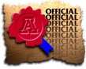

How to use the UA General Catalog
Welcome to Desert Lynx, The University of Arizona's electronic catalog. Desert Lynx contains information about University policies, courses, and academic programs that currently govern progress towards an undergraduate degree. You are responsible for knowing and understanding the contents of your chosen catalog. To help you make better use of the electronic catalog, we've explained some of its elements below.
Two ways to use the catalog
Catalog information is available in two formats. General catalog information is available from the catalog's home page. Anyone can use this page to learn more about UA majors and degree programs, courses of instruction, academic policies, graduation requirements, and anything else that bears directly on completing a baccalaureate degree at the University. The links that appear on the home page are explained briefly below.
Personalized information is available to enrolled UA students who are governed by the 1997-1998 and subsequent catalogs. You may access this information by clicking on the button labeled "Personalized Catalog", found on the button bar at the left edge of the home page. That button will take you to Student Link, a group of services that gives students access to their own computerized records. Once you enter your student ID and PIN number, Student Link will take you directly to your personalized catalog. The personalized catalog is also available through Student Link. Once you are at the Student Link home page, you will find a list of options that include a Catalog option (look for it at the left edge of the screen). Click on and you'll see catalog information specific to your declared major.
The personalized catalog screen will show your college and major, along with information about your major department, degree requirements, faculty, major courses, and academic policies. Also available are links to the general catalog, the Schedule of Classes, and lists of faculty and all courses of instruction.
UA students who follow requirements outlined in catalogs earlier than 1997-1998 will find that some information about them is not available electronically. For example, academic policies for years earlier than 1997-1998 are not available on line. Students governed by earlier catalogs should speak with an advisor or consult the appropriate catalog for such information.
Organization of the catalog
The electronic catalog provides information about academic policies, courses of instruction, and undergraduate degree programs and graduation requirements. The home page includes a table of contents, providing links to all major subcategories of catalog information:
Academic Policies: All academic policies effective for the selected catalog year are listed in this section. They include information about university-wide graduation requirements, grade appeal, academic integrity, and other policies that bear directly on progress towards completion of an undergraduate degree.
College Information: The fifteen colleges that comprised the University of Arizona in 1997-98 are listed here, along with basic information about each college. Links to college home pages are also provided.
Department Information: Departments and other degree-granting units are listed here, as well as basic information about each unit. Links to department home pages are also provided.
Important Deadlines: Click here for a list of important semester or term deadlines for 1997-98, such as the last day to register for credit, the last day to drop a course without penalty, and others.
List of Faculty: Follow this link to a list of all permanent UA faculty in 1997-98.
Undergraduate Majors: This page includes all undergraduate majors active in 1997-98. Each major on the list is linked to information about the managing department.
Academic Program Requirements Reports (APRRs): Click here and see a list of APRRs for all undergraduate degree programs. An APRR lists all the requirements for a specific undergraduate degree, including minimum number of units required for graduation, general education requirements, major course requirements and others. Students are encouraged to be familiar with the APRR associated with their degree program.
Minor Requirement Reports: Click here and see a list of minor requirement reports for all undergraduate minor programs. An minor report lists all the requirements for a specific undergraduate minor. Students are encouraged to be familiar with the minor report associated with their minor program.
List of Courses: Descriptions of all courses of instruction offered in each catalog year after 1993 are available on line. Click here for the master list of 1997-98; courses are organized alphabetically by course prefix.
Schedule of Classes: The Schedule of Classes provides information about course offerings for the term currently available for registration. Department and course descriptions are linked to the on-line schedule, which offers up-to-the minute information on the status of course offerings, including additions, cancellations, room changes, and enrollment figures that are updated as seats are reserved.
Accreditations and Affiliations: Click here to find out more about the accreditations and affiliations of the University and its colleges, schools, departments, and other academic units in 1997-98.
Previous Catalogs: Follow this link to see previous catalogs available electronically. The 1997-1998 catalog was the first electronic catalog at UA designed as a hypertext document. A copy of the 1995-1997 catalog is available on line, but it is only a reproduction of the printed version. No personalized catalog is available for catalog years earlier than 1997-1998.
Official and Unofficial Seals
The three versions of the big A seal signify that the associated information is official University policy. One of the seals is found at or near the top of all catalog pages.
 The unofficial icon (an official seal that's been cancelled)
indicates that the associated information is not official catalog information. The
unofficial icon is used primarily to identify links to non-catalog pages, such as
department or college home pages.
The unofficial icon (an official seal that's been cancelled)
indicates that the associated information is not official catalog information. The
unofficial icon is used primarily to identify links to non-catalog pages, such as
department or college home pages.